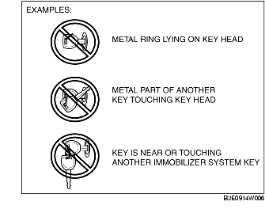

FOREWORD [IMMOBILIZER SYSTEM]
B3E090201077W01
• Malfunction diagnosis occurs automatically when the ignition switch is turned from the LOCK (ACC) to the ON (START) position.
• If the results of the malfunction diagnosis show a malfunction, the security light displays a DTC and the PCM stores the DTC. DTCs stored in the PCM can be verified using the WDS or equivalent.
• DTCs for the immobilizer system that are stored in the PCM are cleared when the ignition switch is turned from the ON to the LOCK (ACC) position.
• There are certain DTCs which can only be verified using the WDS or equivalent, not the security light.
• The PID/data monitor function can be used to verify the number of keys registered for a single vehicle.
• If DTCs are not displayed even though the engine does not start, perform the following symptom troubleshooting:
-
- NO.3 WILL NOT CRANK [ZJ, Z6]
-
- NO.3 WILL NOT CRANK [LF]
-
Caution
-
• Always use the WDS or equivalent to verify DTCs even if the DTCs are verified by the security light display. If the security light has a malfunction, it is possible that a DTC may not be properly displayed.
-
• Always use the WDS or equivalent to verify DTCs because there are certain DTCs which cannot be verified using the security light.
-
• If any of the following items are touching or near the key head, signal communication between the key and vehicle is negatively affected, resulting in the engine not starting. Do not start the engine if any of the following items are touching or near the key head.
-
- Any metallic object
-
- Spare keys or keys for other vehicles equipped with an immobilizer system
-
- Any electronic device, or any credit or other cards with magnetic strips

-
Note
-
• If multiple DTCs are detected as a result of malfunction diagnosis, only the DTC with the lowest number of those detected will be displayed by the security light. The PCM stores multiple DTCs at the same time.
-
• If two or more immobilizer system DTCs are verified, first repair the part indicated by the security light displayed DTC. After repairing one location, turn the ignition switch from the LOCK to the ON position and perform an immobilizer system malfunction diagnosis.